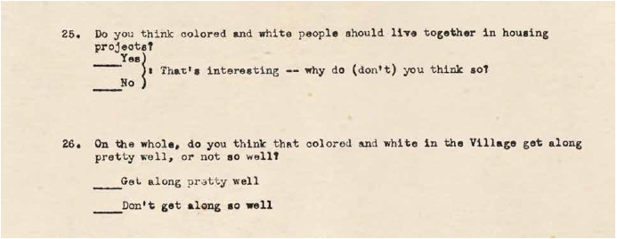

The word “homophily” was coined in a 1954 paper by Paul F. Lazarsfeld and Robert K. Merton in an influential study of friendship in a mixedrace housing project in Pittsburgh, Pennsylvania. The researchers were suspicious of the “familiar and egregiously misleading question: do birds of a feather flock together?”1 They concluded that friendships form and persist not simply on the basis of shared identities but also thanks to shared values and beliefs. They focused on “racial attitudes.” The afterlife of the concept has been remarkable. Today, the assumption of homophily underlies social and economic interactions online, as platforms reinforce the axiom that “similarity breeds connection.” What began as a description of social life has become a rule for algorithms shaping social interactions online.
A Concept Born in a Mixed-Race Housing Project Merton, a sociologist, directed the Columbia-Lavanburg Studies of the Social Organization of Housing Communities. Beginning in 1947, Columbia University researchers conducted a survey of residents of Addison Terrace, in Pittsburgh, to try to understand the effects of “tenant morale” on the success of housing projects. At the time of the study, Addison Terrace had recently been completed. Built with federal funding for public housing made available for the first time through the Housing Act of 1937, the project was dedicated by President Franklin Delano Roosevelt in 1940. It was demolished in 2015.
In a 1951 essay commissioned for the Columbia-Lavanburg project, prominent progressive housing advocate Catherine Bauer questioned the assumption that cohesive neighborhoods are dependent on “a high degree of social similarity” and echoed the liberal optimism of the time that social science research would help in reversing patterns of segregation.
To study social dynamics within planned public housing communities, Merton, together with researchers Patricia Salter West and Marie Jahoda, conducted an extensive survey of residents at Addison Terrace, which they code-named “Hilltown.”
Of the more than ninety questions that made up the survey, Merton and Lazarsfeld focused on only two in their 1954 paper.
Rollover the questions number to see what other questions they asked.